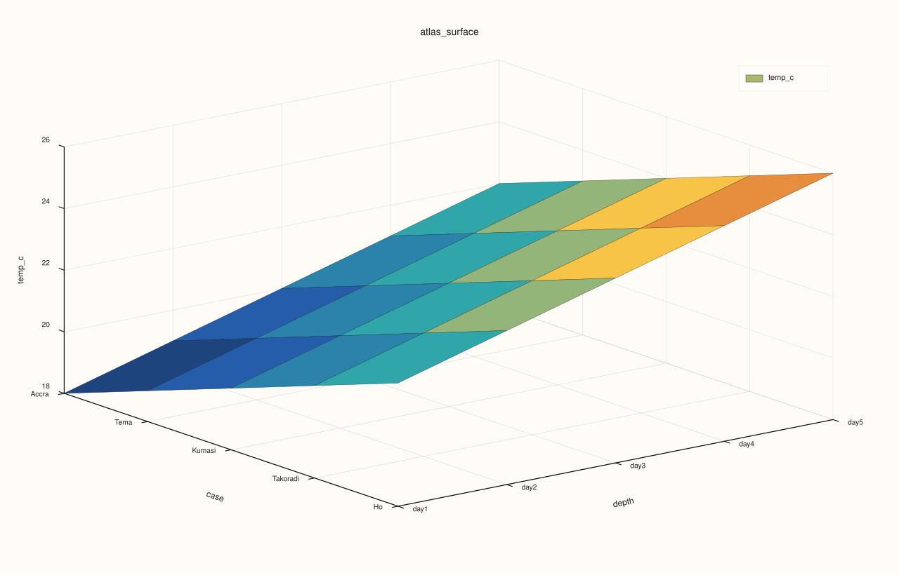
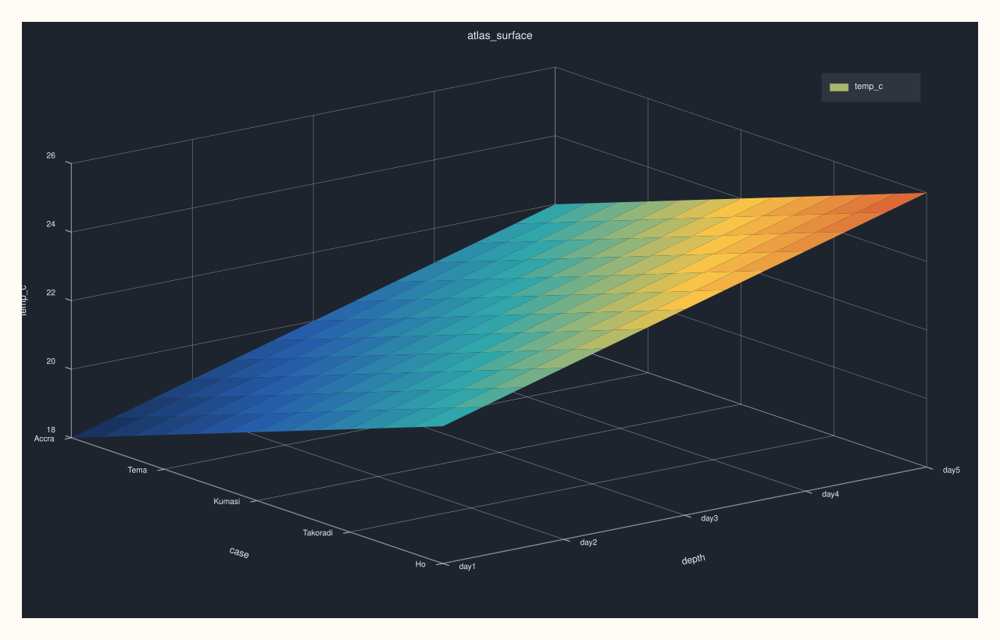

AtlasPlotAccessor::surface¶
Back to AtlasPlotAccessor API Reference
Signatures¶
pluss::pl::Studio AtlasPlotAccessor::surface(std::string_view feature) const
pluss::pl::Studio AtlasPlotAccessor::surface(std::string_view feature, const Surface3DPlotOptions& options) const
What It Does¶
Builds a 3D surface (case × depth × feature) — feature’s value at every case, in every
selected frame, forms a continuous filled sheet over a case-position/depth-position grid.
Important
Returns a Studio, not printable output
Like every method on AtlasPlotAccessor, this builds and returns a pluss::pl::Studio —
call .show()/.to_svg()/.save_svg(path)/etc. to view or persist it; std::cout << chart does
not compile.
Parameters¶
feature (std::string_view)
The numeric feature forming the surface’s z-axis. Must exist in every selected frame.
options (const Surface3DPlotOptions&)
scene (Plot3DSceneOptions): preset (ScenePreset3D: Survey/Presentation/Studio/
Topology), theme, camera_preset/camera, lighting, grid_style — all optional,
layered on top of the default scene. trace (Plot3DTraceOptions): preset
(TracePreset3D), shade (ShadeMode: Faceted/Flat/Smooth), lighting, material,
line_width, transparent — all optional.
Returns¶
pluss::pl::Studio
A figure with one 3D pane holding a single filled surface trace.
Examples¶
Example 1. Plot temp_c as a surface across every frame’s cases and the depth stack, using
default scene/trace settings.
using namespace pluss::table;
std::vector<DataFrame> frames;
std::vector<std::string> cities = {"Accra", "Tema", "Kumasi", "Takoradi", "Ho"};
for (int i = 0; i < 5; ++i) {
double base = static_cast<double>(i);
frames.push_back(DataFrame({
{"temp_c", Thread(pluss::make_series({18.0 + base, 19.0 + base, 20.0 + base, 21.0 + base, 22.0 + base}))},
}, Thread(pluss::make_note(cities))));
}
auto atlas = Atlas(frames, Thread(pluss::make_note({"day1", "day2", "day3", "day4", "day5"})));
auto chart = atlas.plot().surface("temp_c");
chart.show();

The x-axis is each frame’s case labels ("Accra"…"Ho"), the y-axis is the depth labels
("day1"…"day5"), and the z-axis/surface height is temp_c.
Example 2. Same surface, with an explicit Studio-preset scene and smooth shading.
using namespace pluss::table;
std::vector<DataFrame> frames;
std::vector<std::string> cities = {"Accra", "Tema", "Kumasi", "Takoradi", "Ho"};
for (int i = 0; i < 5; ++i) {
double base = static_cast<double>(i);
frames.push_back(DataFrame({
{"temp_c", Thread(pluss::make_series({18.0 + base, 19.0 + base, 20.0 + base, 21.0 + base, 22.0 + base}))},
}, Thread(pluss::make_note(cities))));
}
auto atlas = Atlas(frames, Thread(pluss::make_note({"day1", "day2", "day3", "day4", "day5"})));
Surface3DPlotOptions options;
options.scene.preset = pluss::pl::flash::ScenePreset3D::Studio;
options.trace.shade = pluss::pl::ShadeMode::Smooth;
auto chart = atlas.plot().surface("temp_c", options);
chart.show();

Notes¶
featuremust exist and be numeric in every frame selected byoptions().depth_axis(shared acrosssurface()/wireframe()/cloud3()) — a missing feature in any of them throws.Studio-,Presentation-,Topology-preset scenes change camera angle and lighting defaults without needing to hand-tunecamera/lightingfields individually.Every selected frame must share the same case count — a mismatched frame throws.
See Also¶
AtlasPlotAccessor::wireframe: the same case×depth×feature grid, drawn as an open mesh instead of a filled sheet.AtlasPlotAccessor::cloud3: a genuinely 3-feature scatter, rather than one feature over a case/depth grid.Atlas::plot: the entry point this accessor is reached from.